코딩 도구가 지식 노동 도구가 됐어요
발표자 브라이언은 낮에는 대기업 AI 연구소에서 기업과 조직의 AX 업무를 하고, 저녁에는 유튜브 채널 Brain Trinity를 운영해요. 이 발표는 METACON 2026(서울 메타위크) 둘째 날 무대에서 했고, 세 가지 질문을 차례로 다뤄요.
- 지금 무슨 일이 일어나고 있나요? (트렌드)
- 실제로 어떻게 쓰고 있나요? (브라이언과 주변 사람들의 사례)
- 그래서 무엇이 중요한가요? (결론)
따라가기 벅찰 만큼 빨라요
2025년 11월부터 2026년 6월까지 반년 남짓 동안 도구와 에이전트, 모델이 한꺼번에 쏟아졌어요. 도구 쪽에는 클로드 코드와 코덱스가, 에이전트 쪽에는 오픈클로와 헤르메스 에이전트가 있어요. 모델도 GPT 5.5, Opus 4.8, Fable 5, GLM 5.2가 나란히 나왔어요.
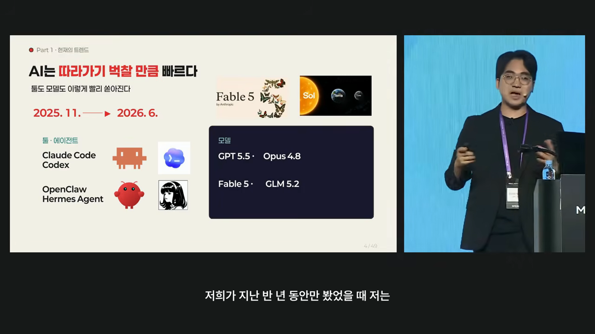
발표자는 말로는 '챗GPT 5.6'이 지난주에 나왔다고 했는데, 슬라이드에는 GPT 5.5로 적혀 있어요. 또 Fable 모델이 너무 강력해서 미국 정부가 수출을 통제했고, 2주쯤은 선택된 기관만 쓸 수 있었다고 말해요. 이 부분은 발표자의 설명이에요.
첫 번째 흐름: 만들기
발표자는 이 흐름을 두 갈래로 나눠요. 첫째는 '만들기'예요. 클로드 코드는 원래 내 컴퓨터의 파일을 직접 다뤄 코딩을 잘하려고 만든 도구예요. 그런데 사람들이 이걸로 문서를 편집하고, 마케팅 전략을 짜고, PPT를 만들기 시작했어요.
발표자는 이게 자연스러운 일이라고 봐요. 코드는 패키지와 용어, 논리가 엮인 구조물인데 문서도 알고 보면 마찬가지예요. 그러니 AI가 코딩하듯 PPT, 엑셀, 영상까지 만들어 낼 수 있다는 거예요. '코드 한 줄로 PPT 끝' 같은 영상이 넘쳐 나는 것도 이 때문이에요.
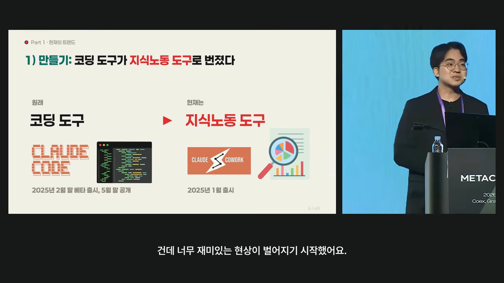
내 폰 속의 AI 비서와 LLM 위키
두 번째 흐름은 '개인 비서'예요. 예전에는 클로드 코드나 코덱스를 내 컴퓨터 앞에 앉아서만 쓸 수 있었어요. 오픈클로와 헤르메스 에이전트는 이 제약을 풀었어요.
방식은 이래요. 에이전트를 내 컴퓨터에서 실행하면서 게이트웨이를 하나 열어 둬요. 이 게이트웨이가 텔레그램, 디스코드, 슬랙 같은 메신저와 연결돼요. 그러면 밖에서도 폰 메신저로 나를 아는 AI 에이전트에게 일을 시킬 수 있어요.
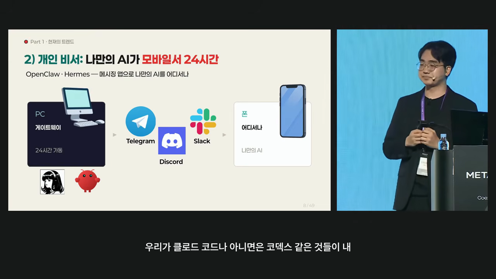
이 흐름이 실제 시장도 흔들었어요. 24시간 켜 둘 컴퓨터로 맥미니를 사는 사람이 몰리면서, 89만 원이던 가장 싼 모델이 품절되고 130만 원까지 올랐어요(2월 기준). 중국에서는 오픈클로의 상징인 가재를 빗대 '1인 1 가재'라며 사람들이 모여 에이전트를 설치하는 일까지 생겼어요.
카파시가 불을 붙인 LLM 위키
이 붐에 불을 하나 더 지핀 사람이 안드레 카파시예요. OpenAI 공동 창립자이자 테슬라 AI 디렉터였던 인물로, 발표자는 지금 Anthropic에 있다고 소개해요. 그가 4월 초 X에 'LLM 위키'를 언급하면서 관심이 확 터졌어요.
LLM 위키는 AI와 함께 편집하는 지식 베이스예요. PPT나 PDF는 AI가 읽고 이해하기 어려운 형태예요. 그래서 원본 PPT·PDF·웹 문서를 AI에게 던지면, AI가 이걸 소화해서 분해하고 연결한 다음 AI가 쓰기 좋은 형태로 저장해 둬요. 원본을 한 번 손질해 두는 셈이에요.
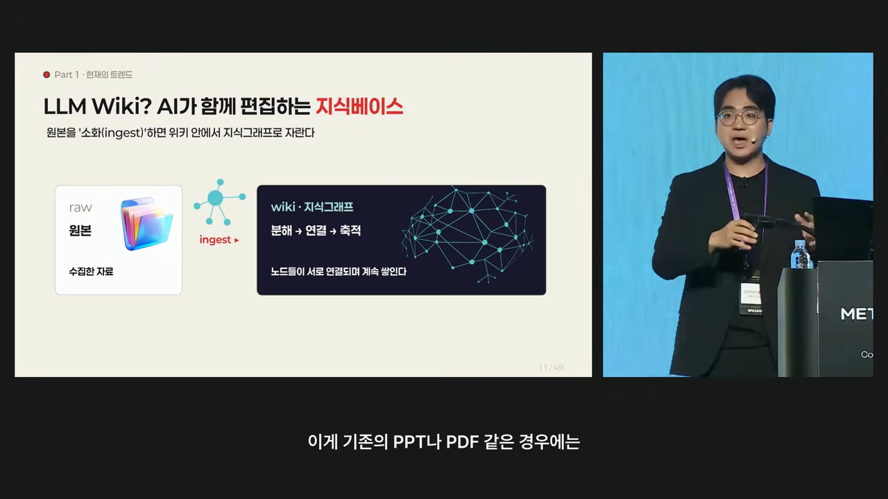
AI OS, 사실은 70년 된 꿈이에요
LLM 위키가 떠오르면서 발표자는 두 개의 축이 또렷해졌다고 봐요.
- AI 모델: 기억력이 길어지고 대화 이력도 오래 기억하고, 성능도 좋아졌어요. 발표자의 표현으로는 '알잘딱깔센'하게 똑똑해졌어요. 발표자는 Anthropic이 2026년 6월 4일에 AI 모델이 스스로 발전할 수 있는 수준이 됐다고 공개했다고 말해요. 슬라이드에는 이 부분에 물음표 세 개가 붙어 있어요.
- 지식: 내가 쌓은 데이터, 도메인 지식, 암묵지와 형식지처럼 나만 가진 지식이에요.
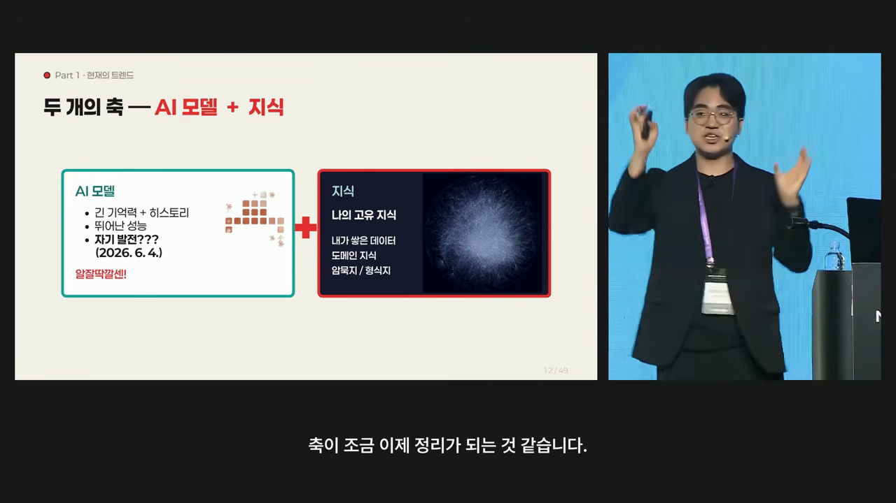
발표자는 이 둘을 합친 것을 '나만의 AI OS'라고 불러요. 온라인에서는 '에이전틱 OS', '클로드 OS' 같은 이름으로도 돌아다녀요. 아이언맨의 자비스처럼 사람의 인지 능력 일부를 AI에게 맡기는 시대가 왔다는 뜻이에요.
사실 새로운 게 아니에요
발표자는 이 흐름이 결코 새롭지 않다고 강조해요. 생각과 기억을 기계에 맡기려는 시도는 1945년까지 거슬러 올라가요. 미국의 과학자 버니바 부시가 '메모리 익스텐더', 곧 메멕스라는 아이디어를 내놨어요. 사람이 읽고 생각하는 일을 기계에 맡긴다는 구상이었어요.
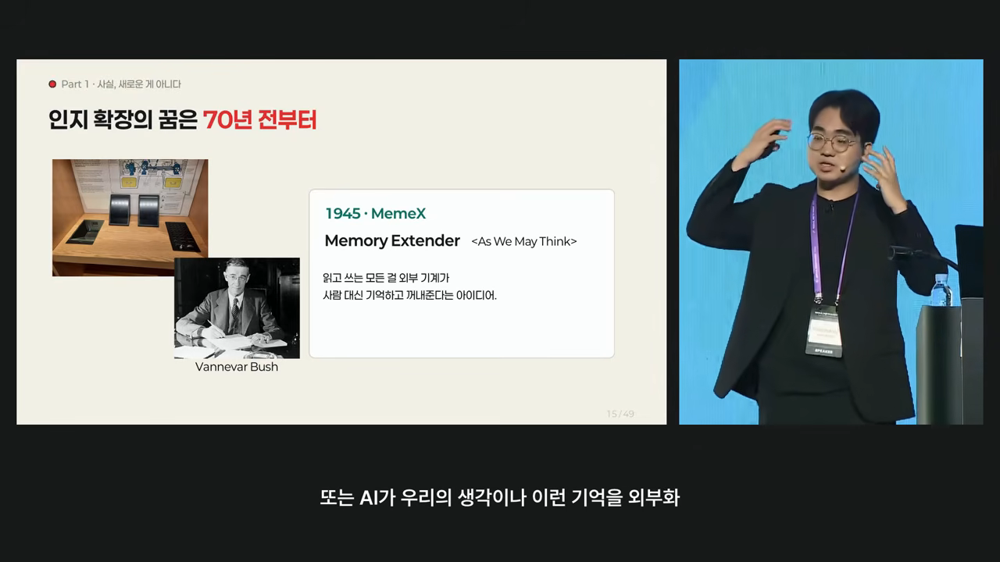
그 뒤에도 지식을 잘 관리하려는 시도는 이어졌어요. 생성형 AI가 대중화되기 전에는 티아고 포르테가 책 『세컨드 브레인』으로 이 흐름을 대중화했어요. 우리는 늘 많이 보고 읽고 듣지만, 그 정보는 흩어지고 휘발돼요. 이것을 나중에 찾고 다시 쓸 수 있게 관리하자는 게 개인 지식관리, 곧 PKM이에요.
그럼 이번엔 뭐가 다를까요? 오래된 지식관리 분야(1945~)와 새로운 AI 에이전트 흐름(2022년 11월~)이 카파시의 LLM 위키에서 만났어요. AI가 지식을 알아서 이해할 만큼 똑똑해진 지금, 발표자는 모든 개인과 조직이 자기 OS를 만드는 속도가 크게 붙을 거라고 내다봐요.
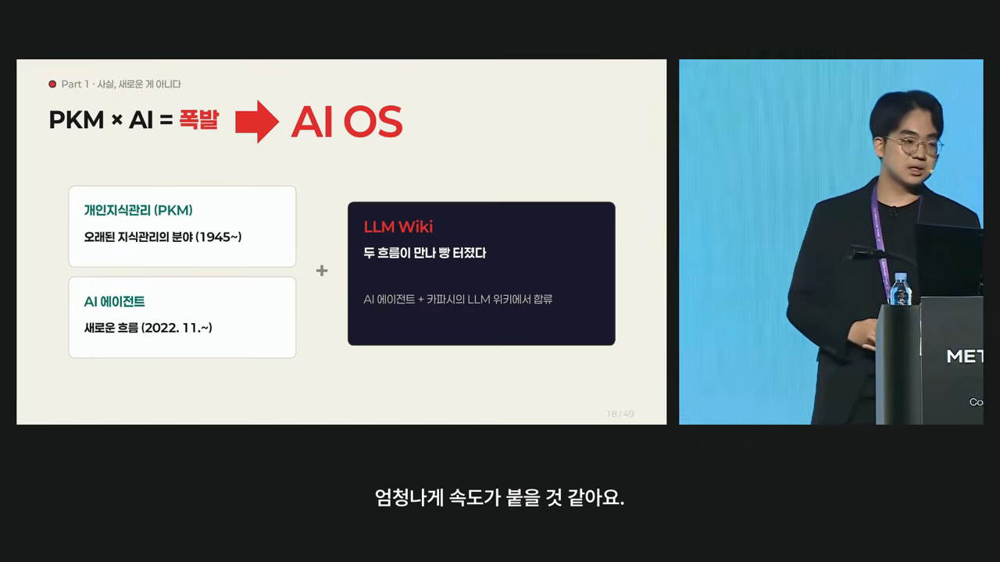
세 개의 두뇌, 브레인 트리니티
AI OS, LLM 위키, 세컨드 브레인, 하네스처럼 인터넷에는 같은 아이디어를 가리키는 말이 너무 많아요. 발표자는 이 트렌드를 이해할 하나의 틀로 '세 개의 두뇌'를 제안해요. 이름하여 브레인 트리니티이고, 채널 이름이기도 해요. 우리가 AI를 쓸 때는 세 개의 두뇌가 동시에 움직인다는 거예요.
| 두뇌 | 무엇인가요 | 하는 일 |
|---|---|---|
| 1st 브레인 · 나 | 내 전전두엽, 내 판단 | 관찰, 판단, 영감, 결정 |
| 2nd 브레인 · 지식 | 내 컴퓨터에 쌓인 지식과 정보 | 저장, 검색, 분류 |
| 3rd 브레인 · AI | 생성형 AI 기반 에이전트 | 확장, 응용, 적용 |
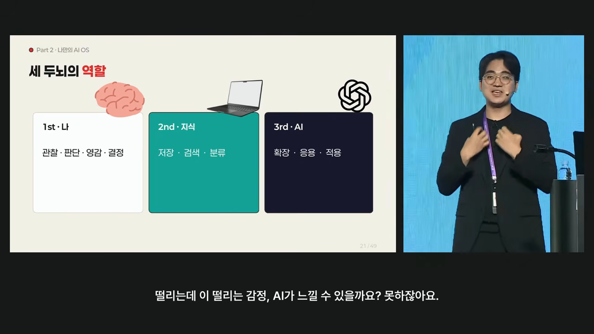
1st 브레인은 사람만 할 수 있는 일을 해요. 발표자는 지금 무대에서 떨리는 이 감정을 AI가 느낄 수 없다고 예를 들어요. 이 경험을 기록해 두면 2nd 브레인에 쌓이고, 3rd 브레인은 사람이 느끼고 저장한 데이터를 가지고 넓히고 응용해요.
셋은 이렇게 서로 주고받아요
맛집 예시로 보면 쉬워요.
- 인터넷에서 좋은 맛집을 보고 옵시디언(2nd)에 저장해요.
- AI(3rd)에게 '이번 주말 아내와 서울에서 갈 맛집'을 물어봐요.
- AI가 내가 전에 저장해 둔 맛집을 꺼내 와서 추천해요.
- '계획 세워 드릴까요?'에 그렇다고 하면, AI가 일정 문서를 만들어 다시 옵시디언에 저장해요.
- 나(1st)는 그 문서를 보며 기억을 강화하거나 결정을 내려요.
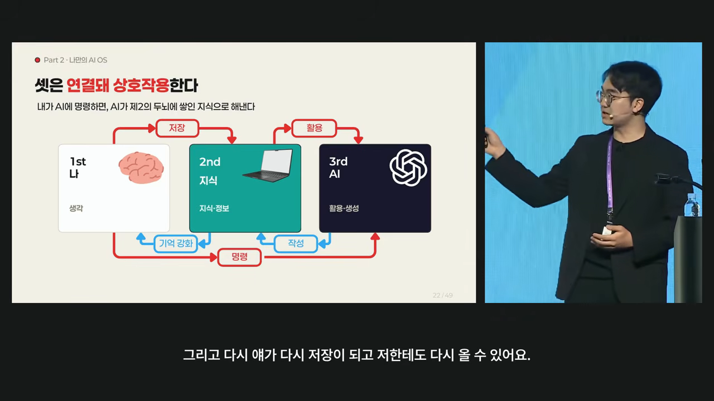
그런데 대중의 관심은 오직 3rd 브레인, 곧 어떤 AI 도구가 좋은지에만 쏠려 있어요. 발표자는 정작 더 중요한 건 어떤 데이터를 저장하느냐, 그리고 내가 그걸 어떻게 쓰느냐라고 짚어요. 좋은 도구만 찾는 대신 1st와 2nd를 챙기라는 게 이 발표 전체를 꿰는 메시지예요.
왜 옵시디언인가요?
더 중요하다고 한 2nd 브레인으로 요즘 가장 많이 선택되는 게 옵시디언이에요. 객석에 물어보니 3분의 1 정도가 이름을 들어 봤다고 했어요. 발표자는 옵시디언을 'AI를 위해 최적화된 노트 앱'이라고 소개하며 이유를 네 가지 들어요.
- 로컬: 모든 노트가 클라우드가 아니라 내 컴퓨터에 저장돼요. 클라우드에 있으면 결국 내 데이터가 아니라는 게 발표자의 생각이에요.
- 마크다운: AI가 문서를 만들고 읽고 이해하는 형식이에요. 그래서 클로드 코드나 코덱스가 내 노트를 바로 읽을 수 있어요.
- 무료: 업무용으로도 무료로 쓸 수 있고, 플러그인 생태계가 있어요.
- 연결: 가장 큰 장점이에요. 노트끼리 링크로 이어져요.
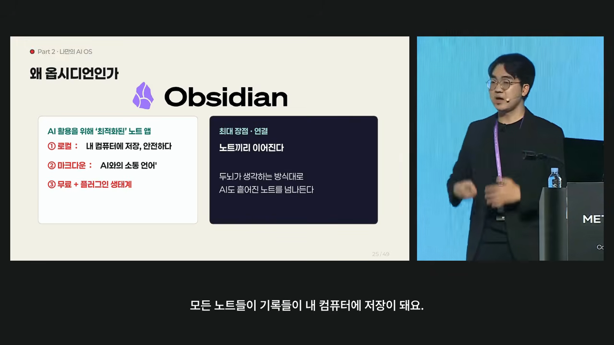
연결이 왜 중요할까요? 사람은 평소에 연결하고 연상하면서 생각해요. 그 원리 그대로 기록해 두면, AI도 사람의 생각을 따라 링크를 하나씩 타고 가며 관련 파일을 읽어 올 수 있어요.
2021년부터 쌓인 인생 기록
발표자는 2021년부터 옵시디언을 써 왔어요. 실제 볼트를 열어 그래프 뷰를 보여 주는데, 점 하나하나가 노트예요. 화면에 보이는 건 최근 2년치이고, 그 전 기록은 아카이브로 옮겼어요. 새로운 걸 받아들일 때마다 관련된 기억과 노트를 일일이 연결해서 만든 '나의 두뇌'라고 설명해요.
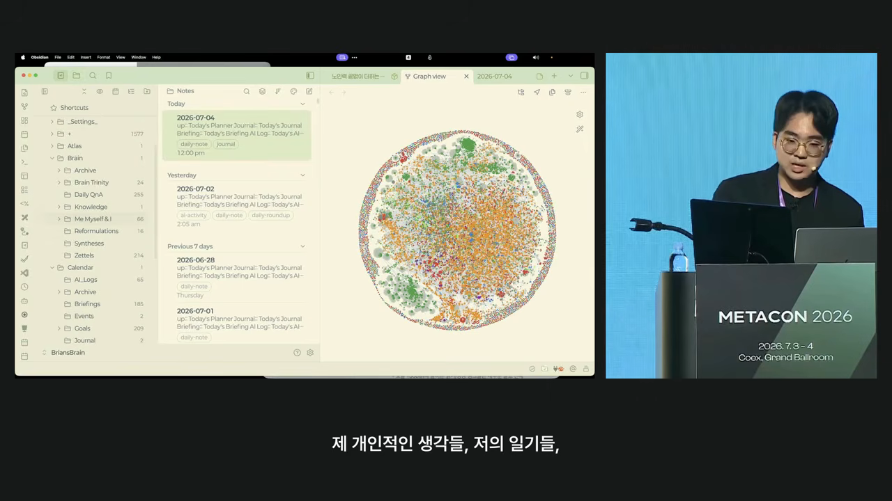
화려하게 꾸민 볼트는 아니에요. 대신 개인적인 생각, 일기, 연간 목표까지 인생이 통째로 담겨 있어요. 발표자는 컴퓨터를 도난당하면 기계보다 데이터를 잃는 게 더 크다고 말할 정도예요. 이 볼트를 AI에게 넘겨주고 네 가지 방식으로 쓰고 있어요.
시연: 아침 계획과 지식 기록
시연 1: 아침 계획 세우기
플래너에 오늘의 일정과 중점 과제를 매일 아침 적는 건 꽤 번거로워요. 발표자는 이 일을 헤르메스 에이전트에게 맡겨요. 흐름은 이래요. 내가(1st) 오늘 계획을 부탁하면, 에이전트(3rd)가 캘린더·할 일·메일을 확인하고, 옵시디언(2nd)에 기록한 다음 할 일과 캘린더에 자동으로 등록해요.
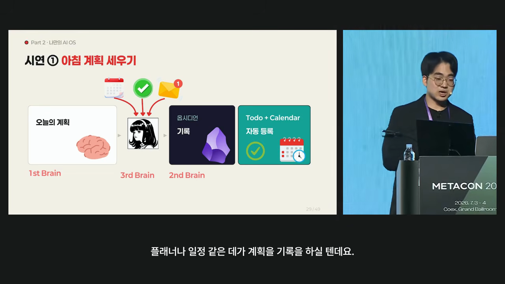
시연에서 에이전트는 캘린더와 할 일 앱, 지난 일주일·한 달 기록을 다 확인한 뒤 '오늘은 METACON 발표를 최종 점검하고 라이브 시연을 확인하는 게 우선'이라고 먼저 정리해 줘요. 이어서 플래너에 등록해 달라고 하자, 집에 있는 맥미니에서 돌던 에이전트가 옵시디언 데일리 노트의 비어 있던 플래너를 채웠어요. 오늘 무엇을 할지 고민하는 시간이 줄어서, 이동하면서도 계획을 세울 수 있다는 게 핵심이에요.
시연 2: 지식을 입력하고 기록하기
길에서 영상을 보다가 인사이트가 떠오르면 기록해야겠죠. 발표자는 뉴스레터 롱블랙을 즐겨 읽어요. 이번에 인상 깊었던 글은 '노인력: 끝없이 더하는 시대에 힘을 빼는 것'이었어요. 스스로 맥시멀리스트인 발표자에게 '빼고 덜어 내는 삶'이라는 메시지가 와닿았대요. 그래서 처음에는 그냥 막 적어 뒀어요.
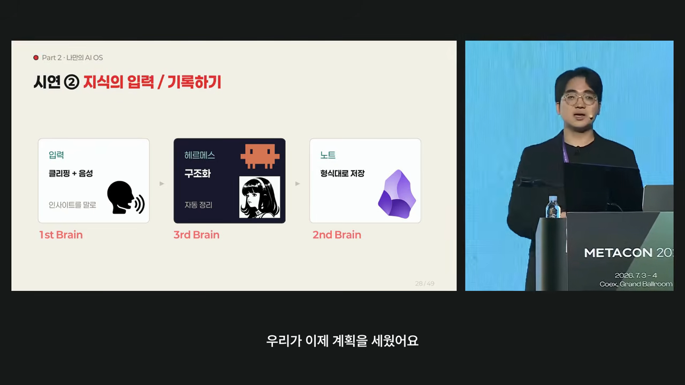
AI가 나중에 이 노트를 잘 쓰려면 일정한 템플릿으로 정리돼 있어야 해요. 그래서 대충 적거나 폰으로 말로 남긴 메모를 AI에게 넘기며 '이 노트를 내 템플릿대로 정리해 줘'라고 해요. 발표자의 템플릿은 다음을 담아요.
- 언제, 어디서, 무엇을 읽었는지
- 그래서 내 생각은 무엇인지
- 이 내용을 나에게 어떻게 적용할 수 있는지
AI는 여기에 'AI 관찰'도 덧붙여요. '브라이언, 이 노트는 네가 평소 중요하게 여기는 이것과 닮았어' 같은 식이에요. 마지막으로 볼트 안의 관련 노트를 찾아 알아서 연결해 줘요. 생각 하나가 기존 노트들과 이어지며 넓어지는 거예요.
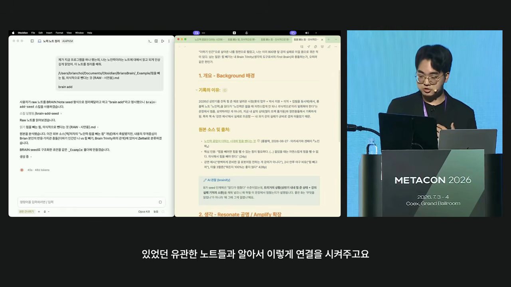
시연: 콘텐츠 작성과 자동 회고, 그리고 다른 사람들
시연 3: 발산은 사람, 수렴은 AI
발표자가 가장 자주 쓰는 활용은 콘텐츠 작성이에요. 스스로 구조화는 어렵지만 발산은 누구보다 잘한다고 말해요. 그래서 생각을 쏟아 내는 건 사람이 하고, 정리하고 구조화하는 건 AI에게 맡겨요.
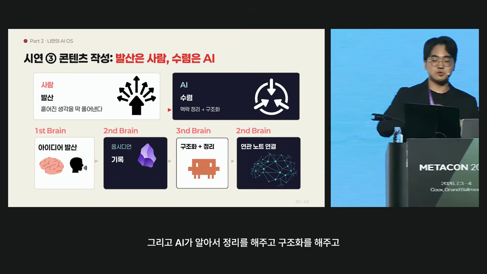
이 발표가 실제 사례예요. 발표 제안을 받고 30분 동안 의식의 흐름대로 담고 싶은 걸 다 쏟아 냈어요. 그리고 AI에게 구조화를 부탁하자, 이메일 내용 같은 행사 관련 정보까지 함께 묶어 아웃라인을 만들어 줬어요. 다시 요청하면 메시지별 기승전결 흐름을, 그다음엔 슬라이드별 와이어프레임을 짜 줘요. 마지막으로 PPT를 만들어 달라고 하면 초안이 나오고, 최종 편집은 발표자가 해요. 그동안 모아 둔 지식이 함께 반영된다는 점이 좋다고 말해요.
시연 4: 자동 회고
발표자는 라이프 로깅을 해요. 노트북 화면을 1초마다 캡처하고, 목걸이형 녹음기로 24시간 녹음해요. 일정을 기준으로 이 활동 데이터를 엮으면 '브라이언이 오늘 뭘 했는지'가 나와요.
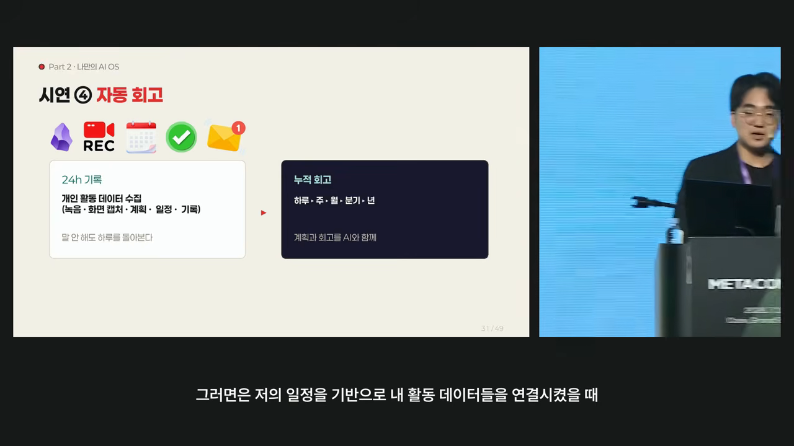
회고는 매일 새벽 2시에 자동으로 돌아요. 할 일 앱, 폰 사용 내역, 일기, AI와 나눈 대화, 컴퓨터 화면 기록을 모아 '오늘 무엇을 했고, 너의 개인 서사는 이랬고, 감정은 이랬고, 성과는 이랬다'고 정리해요. 발표자는 나를 아는 다른 사람이 나에 대해 알려 주는 것 같다고 표현해요.
하루 회고를 다시 요약해서 주간, 월간, 분기 회고를 만들어요. 그러면 연말에 한 해를 돌아볼 때 압축된 기록과 원본을 함께 보며 내가 실제로 무엇을 했는지 확인할 수 있어요. 데이터를 모아 분기 대시보드도 만들었어요. 목표 완주율, 월별 시간 투입, 강의 횟수, 주간 집중 시간 같은 지표를 보여 줘요. 3~4월부터 시작해서 아직 빠진 데이터가 많지만, 객관적으로 돌아보기에 좋다고 말해요.
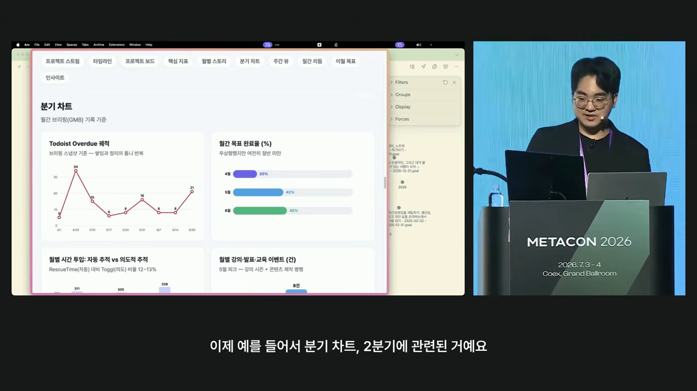
발표자가 이렇게 기록에 매달리는 이유는 시간이 가장 희소한 자원이라고 보기 때문이에요. 남겨 두지 않으면 휘발되고, 자세히 남겨 둘수록 나중에 그 경험을 더 풍부하게 돌아볼 수 있어요. 발표자의 활용은 대부분 자기 성찰을 향해 있어요.
다른 사람들은 이렇게 써요
같은 옵시디언과 에이전트라도 목적은 사람마다 달라요. 발표자는 세 가지 사례를 소개해요.
| 누가 | 어떻게 | 무엇에 쓰나요 |
|---|---|---|
| 김재경(쓰레드 @tofukyung) | 카파시, 스티브 잡스 같은 캐릭터 페르소나 에이전트끼리 대화시켜요 | 의사결정에 도움을 받아요 |
| 지피터스(AI 커뮤니티) | 오픈클로 에이전트들에게 역할을 나눠 주고 서로 대화하며 일하게 해요 | 조직 안에서 AI가 한 팀처럼 협업해요 |
| 안창현 교수(한림대) | 옵시디언과 AI를 직접 고쳐 자기만의 인터페이스를 만들어요 | 공공기관이 많이 쓰는 한글(HWP) 파일을 마크다운으로 바꿔 AI와 함께 써요 |
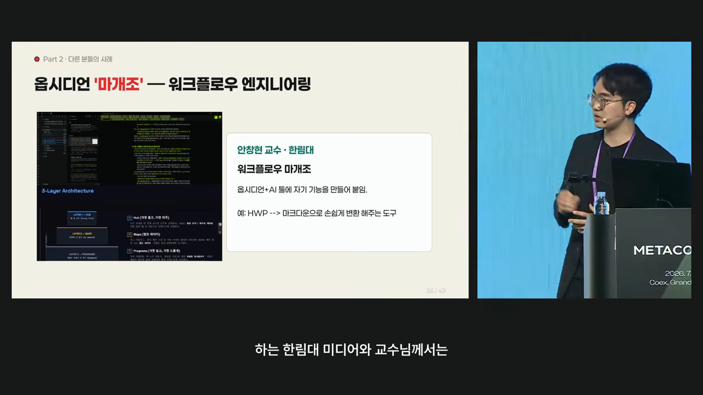
발표자는 사람·지식·AI가 엮인 이 AI OS 덕분에, 개인부터 작은 팀과 큰 조직까지 어떻게 AI 네이티브로 갈지 이제야 본격적으로 고민하게 될 거라고 정리해요.
PKM에서 PCM으로: 맥락이 격차를 만들어요
AI가 이렇게 빨리 달리는데, 그럼 나는 뭘 해야 할까요? 발표자의 답은 '결국 나로 돌아간다'예요. 비인간적인 것이 많아질수록 인간다움, 곧 나다움이 더 중요해진다는 거예요.
PKM을 넘어 PCM으로
나다움은 두 가지로 나눠 볼 수 있어요. 첫째는 개인 지식이에요. AI는 이미 세상의 데이터를 거의 다 배웠으니, 남은 새로운 데이터는 나의 경험과 나만의 것이에요. 발표자는 여기서 한 걸음 더 나아가 '나의 맥락'을 줘야 한다고 말해요. 슬라이드에서는 이것을 PKM(개인 지식관리)에서 PCM(개인 맥락 관리)으로 넘어가는 변화로 정리해요.
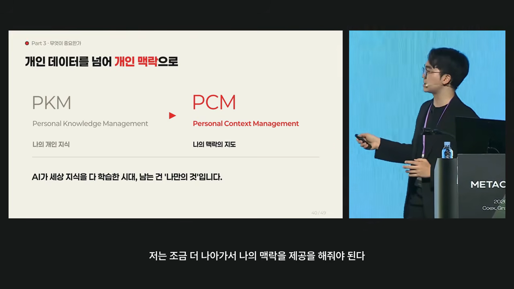
보통 맥락이라고 하면 채팅창에 입력하는 내용, 곧 컨텍스트를 떠올려요. 발표자가 말하는 맥락은 '지금 이 순간의 의도와 상황'이에요. 같은 시간 같은 자리에 앉아 있어도 사람마다 왜 왔는지, 무엇을 기대하는지가 다르잖아요. 그게 나의 맥락이에요.
맥락은 세 겹이에요
| 맥락 | 성격 | 담기는 것 |
|---|---|---|
| 나 | 영속적이에요(Persistent) | 역할, 취향, 사고방식, 목표. 내가 어떤 사람인지예요 |
| 프로젝트 | 몇 달 이어져요 | 프로젝트의 목표, 이해관계자, 규모 |
| 태스크 | 일시적이에요(Perishable) | 지금 이 대화에서 하려는 일과 의도 |
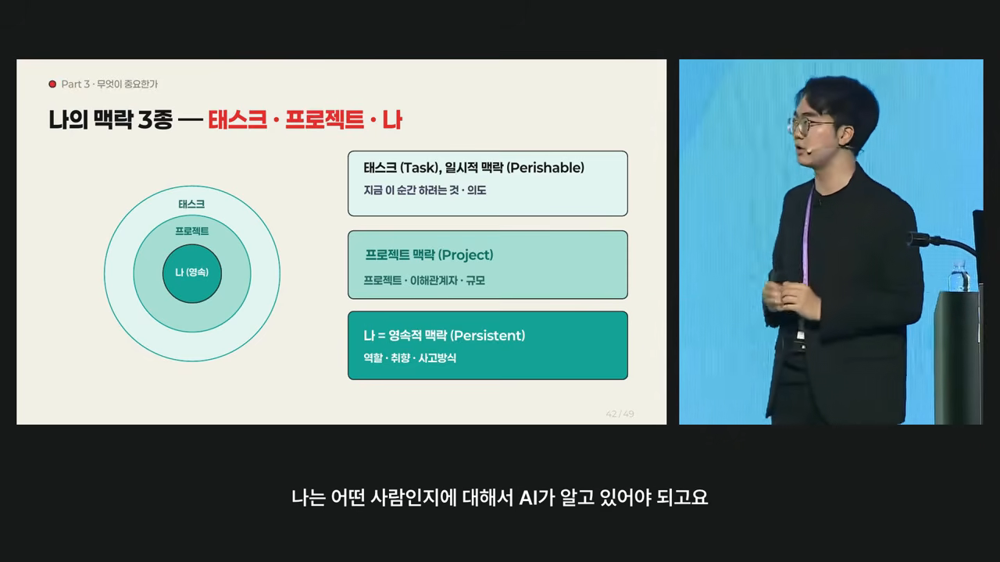
이 세 겹이 합쳐져야 AI가 '지금 이 사람이 무엇을 하려는지'를 알아요. 그런데 맥락을 몽땅 넣으면 오히려 역효과예요. 관련 없는 정보까지 들어가면 AI가 무엇이 중요한지 몰라 환각이 생기고, 생산성은 떨어지고 비용은 늘어요. 지금 이 순간, 관련 있는, 나의 맥락만 넣어야 AI가 정확하고 빠르게 원하는 품질을 내요.
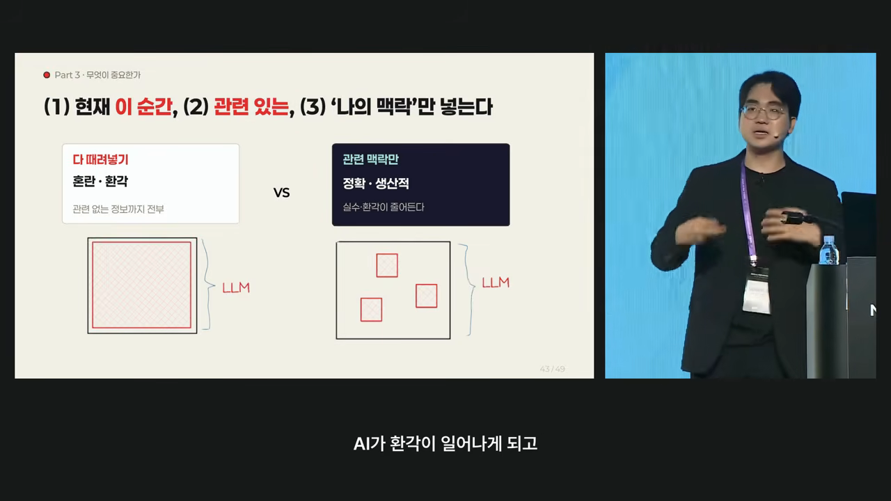
MAAP: AI에게 건넬 나의 지도
필요한 맥락만 골라 주려면 AI OS 안에 '나의 지도'가 있어야 해요. 발표자는 이것을 MAAP이라고 불러요. 네 글자 중 둘은 사람이, 둘은 AI 쪽이 채워요.
- M · Meaning: 나는 누구인가요? 정체성, 가치, 목표, 역할, 내 일대기를 담은 문서예요.
- A · Asset: 나만의 재료는 무엇인가요? 내 지식과 데이터, 가장 잘 만든 산출물처럼 언제든 다시 쓸 자산이에요.
- A · Action: AI가 나를 돕기 위해 어떻게 행동하나요? MCP, 스킬, 워크플로우, 루프 같은 도구예요.
- P · Persona: 누가 나를 돕나요? 내 클로드 코드나 헤르메스가 어떤 역할을 맡는지예요.
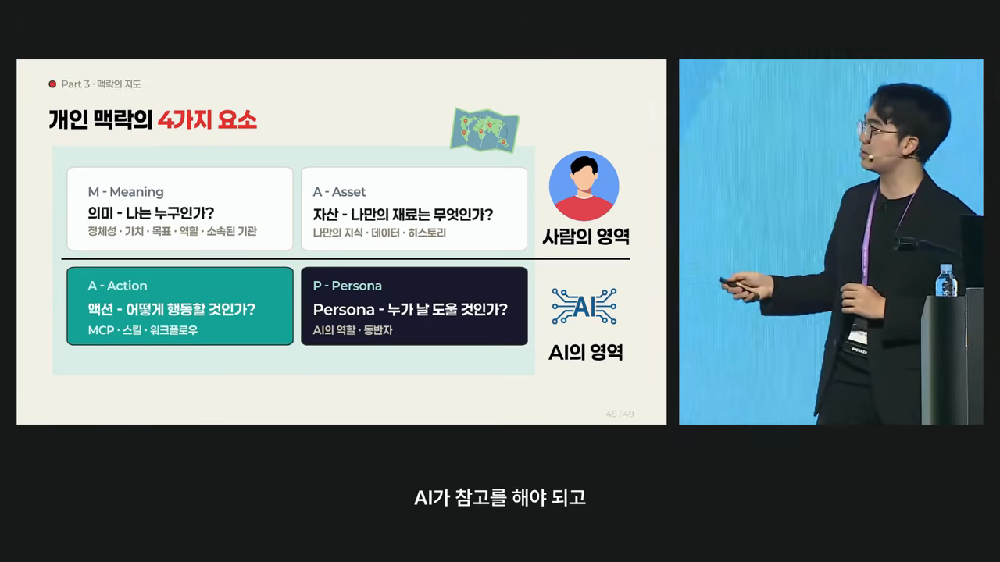
이 지도가 있으면 AI에게 필요한 맥락만 건네고, 결국 나를 아는 AI를 만들 수 있다는 거예요.
개인은 쉽고, 조직은 어려워요
개인은 지식을 어떻게 저장하고 관리할지 나만 동의하면 되니 쉬워요. 조직은 규모가 커질수록 데이터는 엉망이고, 업무 방식은 매뉴얼로 정리돼 있지 않고, 보안 문제까지 얽혀요. 그래서 변화 관리가 훨씬 어렵고 오래 걸려요.
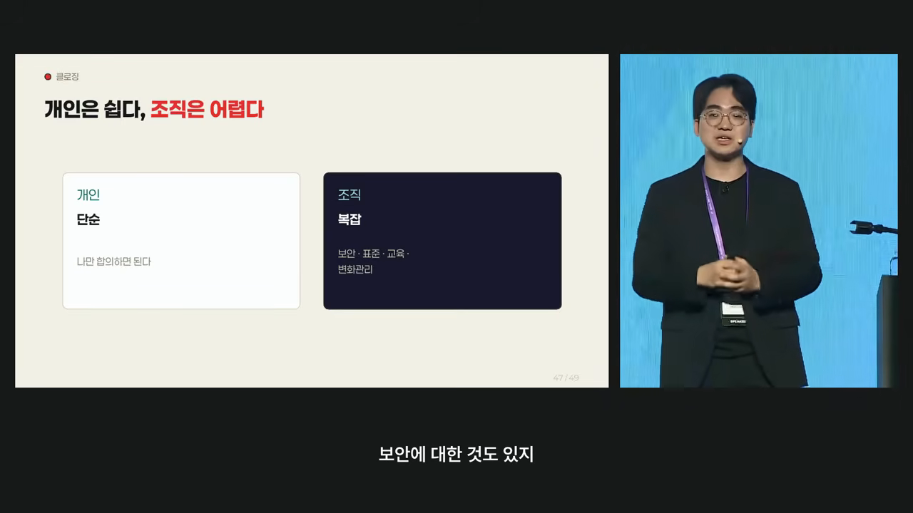
마무리 메시지는 '당신만의 AI OS를 만드세요'예요. 모델은 언제든 갈아 끼울 수 있고 다른 앱이나 에이전트로 옮길 수도 있어요. 하지만 나의 맥락으로 쌓은 시스템은 평생 함께 자라요. 발표자는 AI를 쓰는 이유가 결국 세상에 의미 있는 변화를 만들기 위해서라고 말하며 발표를 끝내요.
나를 아는 AI를 만들기 위해서는 결국에는 내가 누군지 알아야 되고
— 영상 38:14